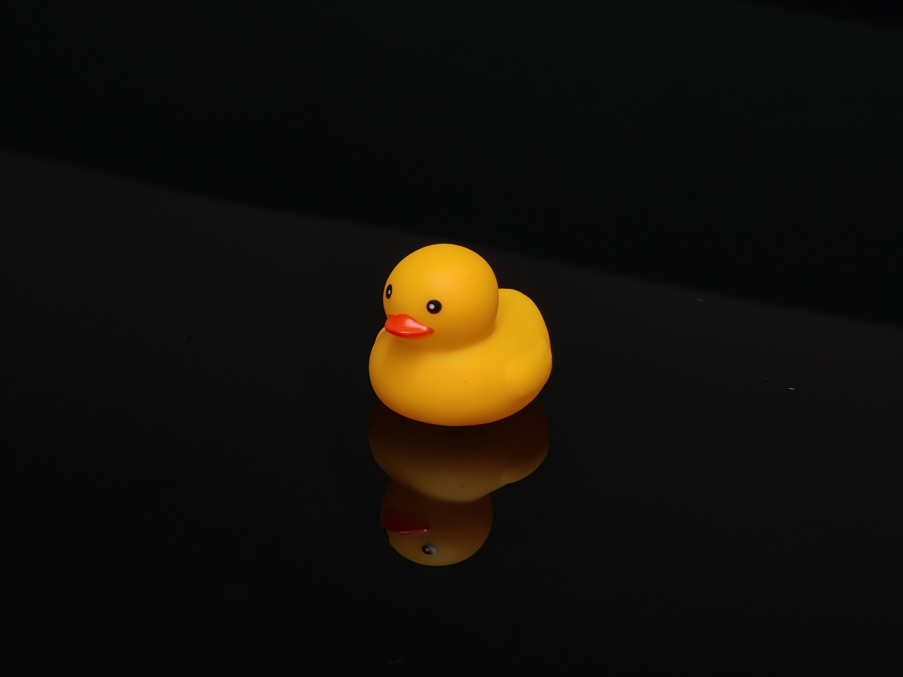

러버덕, 귀여움으로 전 세계를 사로잡다
 커다란 노란 오리가 도시 곳곳을 떠다니며 사람들의 마음을 훔치고 있다. 러버덕의 심플하면서도 귀여운 디자인은 남녀노소를 불문하고 큰 호응을 얻고 있다. 아이들은 장난감을 떠올리며 환호하고, 어른들은 동심으로 돌아간 듯 미소를 짓는다. 단순한 외형 속 따뜻함과 유쾌함이 담긴 러버덕은 도시의 풍경에 색다른 생명을 불어넣으며 현대적 공공 예술의 아이콘으로 자리 잡고 있다.